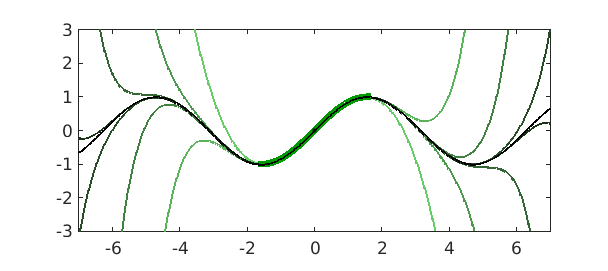
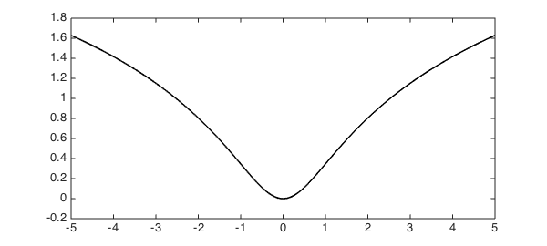
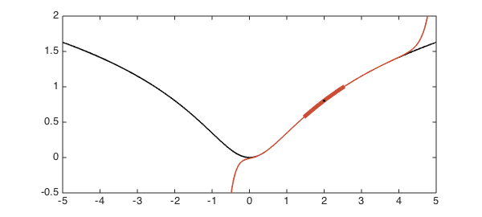
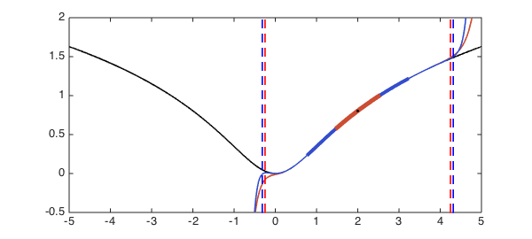
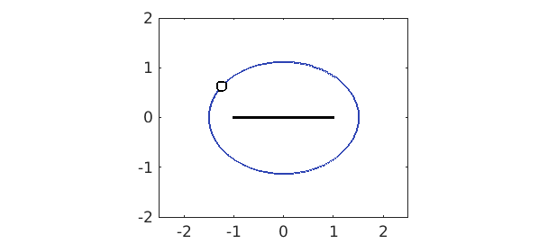
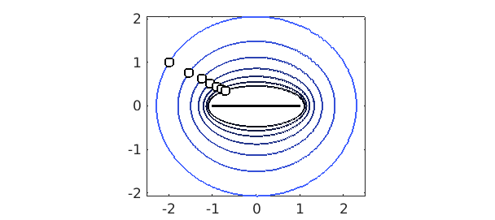

One of the most elementary---but also most important---results in the theory of approximation is Taylor's theorem, which gives a polynomial approximation to a function in terms of its derivatives at a point. For an entire function, the Taylor series converges everywhere in the complex plane. For a function which is analytic only in a neighborhood of a point $x_0$ and not necessarily in the entire plane, the Taylor series based at $x_0$ converges in the disc centered at $x_0$ whose radius is the distance from $x_0$ to the nearest singularity.
For Chebyshev approximations of functions, these results have an analogue. For entire functions, as before, the Chebyshev series converges to the function everywhere in the complex plane. For analytic functions which are not entire, the result is this: Given a function $f$ that is analytic on the real interval $[-1,1]$, the Chebyshev series of $f$ converges in the largest Bernstein ellipse in which $f$ is analytic. A Bernstein ellipse is the image of a circle $z=re^{i\theta}$ under the Joukowski map $z\mapsto (z+1/z)/2$.
Convergence for an entire function
The function $f(x) = \sin(x)$ is an entire function, so its Chebyshev series converges everywhere in the complex plane. Let's approximate it on the interval $[-\pi/2,\pi/2]$, which will be shown as a thick green line. We will approximate $f$ on Chebyshev grids of size $5,7,9,11,\ldots$ and superimpose the approximations on a plot of the function itself. Darker curves correspond to approximations on denser grids:
x0 = 0;
f = chebfun(@sin, [-7 7]);
LW = 'LineWidth';
for k = 2:8
p = chebfun(@sin, x0+[-1 1]*pi/2, 'trunc', 2*k+1);
plot(p, [-7 7], '-', 'color', [.5-k/20 1-k/10 .5-k/20]), hold on
end
plot(p, '-', 'color', [0 .6 0], LW, 5)
plot(x0, f(x0), 'k.'), plot(f, 'k-')
axis equal, axis([-7 7 -3 3])

Many books have a version of this plot for Taylor series.
Were we to continue with denser grids, we would eventually reach a limit in accuracy due to the fact that these computations are being done in floating point arithmetic. But in theory (or by using variable precision arithmetic), we could approximate the sine function to arbitrary accuracy at any point on the real line by sampling it at Chebyshev points only in this interval.
Convergence for a non-entire analytic function
The function $f(z) = \log|z-i|$ has a branch point at $z=i$ but is well-behaved when restricted to the real axis:
func = @(x) log(abs(x-1i)); f = chebfun(func, [-5 5]); hold off, plot(f, 'k-'), hold on

We will compute a Chebyshev approximation of this function on the interval $[1.5, 2.5]$ and then evaluate the approximation outside of this interval. Again, the interval is drawn as a thick line, and the red curve is the Chebyshev approximation extrapolated outside of it.
x0 = 2; % Midpoint of interval of approximation r1 = 0.5; % Radius of interval of approximation p1 = chebfun(func, x0 + r1*[-1,1]); % Approximant red = [.8 .3 .2]; blue = [.2 .3 .8]; plot(p1, [-5 5], 'color', red) % Draw red function plot(p1, '-', 'color', red, LW, 5) % Draw red interval plot(x0, f(x0), 'k.') % Interval midpoint ylim([-0.5 2])

Here is an approximation on a larger interval with the same midpoint:
r2 = 1.2; % Another radius p2 = chebfun(func, x0 + r2*[-1,1]); % Another approximant plot(p2, [-5 5], '-', 'color', blue) % Draw blue function plot(p2, '-', 'color', blue, LW, 4) % Draw blue interval plot(p1, '-', 'color', red, LW, 5) % Redraw red interval plot(x0, f(x0), 'k.') % Interval midpoint ylim([-0.5 2])

The second approximation was computed from an interval more than twice the length of the first, yet outside of the interval of approximation it is hardly any better. What's going on? A bit of approximation theory provides the answer.
As mentioned in the introduction, Chebyshev series converge in Bernstein ellipses. To calculate the ellipse parameter (which can be thought of as the "radius") of the largest Bernstein ellipse in which $f$ is analytic, we can do the following. Since the Joukowski map turns circles into ellipses, the inverse Joukowski map turns ellipses into circles, for which we can easily calculate the radius. (The ellipse parameter $\rho$ is equal to the radius of the corresponding circle.) We will need to apply a linear transformation (a shift and a scaling) to transplant the interval of approximation to the interval $[-1,1]$ where the theory applies.
invJoukowski = @(z) z + sqrt(z^2 - 1); Joukowski = @(z) (z + 1./z)/2; sing = 1i; % Location of singularity of f rho1 = abs(invJoukowski( (sing-x0)/r1 )); % Shift & scale, inverse Jouk. d1 = Joukowski(rho1)*r1; % Rescaled: radius of convergence of original func. plot([x0-d1,x0-d1], [-0.5,2], 'r--') plot([x0+d1,x0+d1], [-0.5,2], 'r--') rho2 = abs(invJoukowski( (sing-x0)/r2 )); d2 = Joukowski(rho2)*r2; plot([x0-d2,x0-d2], [-0.5,2], 'b--') plot([x0+d2,x0+d2], [-0.5,2], 'b--')

A Chebyshev interpolant to $f$ on the red interval can be expected to converge (aside, perhaps, from numerical problems) between the red dashed lines, whereas a Chebyshev interpolant to $f$ on the blue interval can be expected to converge in between the blue dashed lines. Expanding the interval didn't get us much!
Bernstein ellipses and intervals of convergence
We can get a better understanding of the phenomenon just observed by visualizing the corresponding Bernstein ellipses in the complex plane. The approximation theory we've discussed is applicable to functions on $[-1,1]$, so in order to accommodate other intervals we shift and scale them by a linear transformation. In this way the ellipse parameter is dependent on the interval chosen to represent the function. Here is such an ellipse corresponding to the function $f(z) = \log|z-i|$ approximated on the interval $[0.4,3.6]$:
hold off x0 = 2; r = 1.6; dom = x0 + r*[-1,1]; % Original domain rho = abs(invJoukowski( (sing-x0)/r )); % Ellipse parameter z = chebfun(@(x) exp(1i*pi*x)); plot(Joukowski(rho*z), '-', 'color', 1.25*(1.5-r/2)*blue) % Plot ellipse hold on, plot((sing-x0)/r, 'ko') % Plot singularity as circle plot((dom-x0)/r, [0 0], 'k-') % Plot transplanted domain axis equal, axis([-2.5 2.5 -2 2])

Suppose we approximate the function from the above example on a series of larger and larger intervals each centered at the point $x_0=2$. If the radius of the interval is $r$, then the right linear transformation to transplant the interval to $[-1,1]$ is the mapping $x\mapsto (x-2)/r$.
Increasing the radius of the interval, in order words, corresponds to rescaling the argument of the function (after a suitable shift). If the function happens to have a singularity, increasing the radius of the interval brings the singularity closer to the origin, which reduces the size of the ellipse of analyticity of the transformed function. In the following plot, Bernstein ellipses corresponding to the regions of analyticity of Chebyshev approximants on increasingly large intervals are shown: the darker the ellipse, the larger the interval. (The interval, shown in the center, has been transplanted to lie in $[-1,1]$.) The singularity of the transformed function is plotted in each case as a small circle.
for r = 1:0.3:3
dom = x0 + r*[-1,1]; % Original domain
rho = abs(invJoukowski( (sing-x0)/r )); % Ellipse parameter
plot(Joukowski(rho*z), '-', 'color', 1.25*(1.5-r/2)*blue) % Plot ellipse
plot((sing-x0)/r, 'ko') % Plot singularity as circle
end

In the limit of extremely large intervals, the singularity of the transformed function is brought very close to the interval $[-1,1]$. So although the Chebyshev approximation is good in the interval, it is useless anywhere immediately outside it. On the other hand, Chebyshev approximations on small intervals may be extrapolated with some success (though not to machine precision).
This part of the theory doesn't usually cause problems for us because we are not typically interested in evaluating a Chebyshev interpolant beyond its interval of approximation. Nevertheless, it is good to be able to explain the behavior!
References
- L. N. Trefethen, Approximation Theory and Approximation Practice, SIAM, 2013.